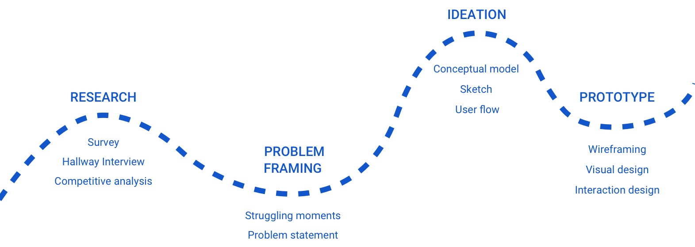
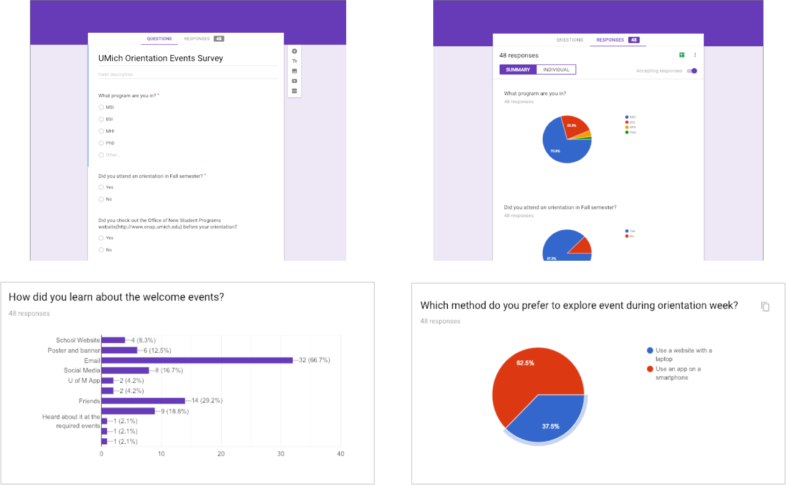
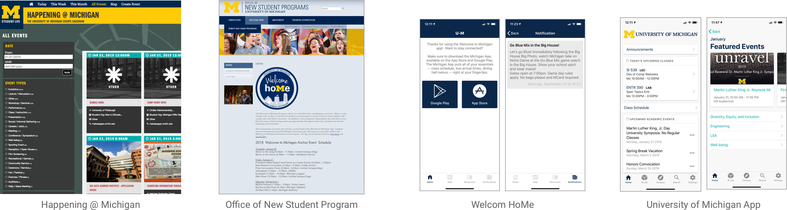
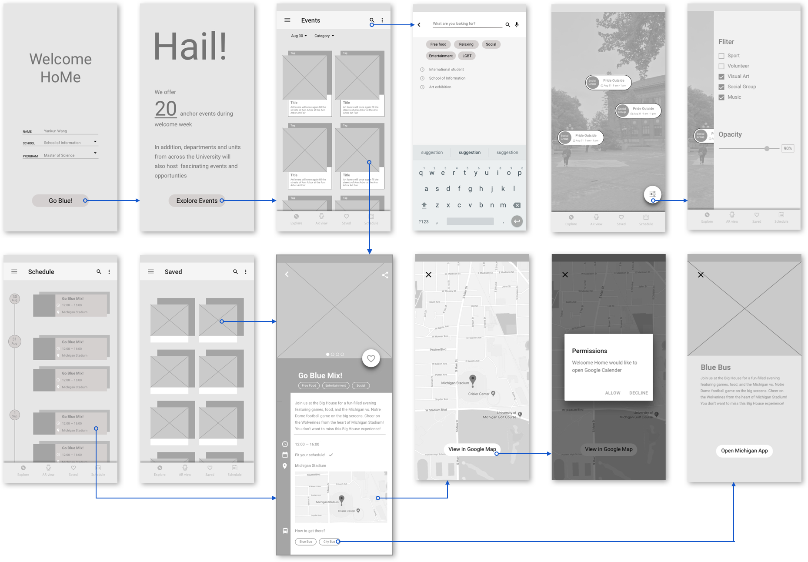
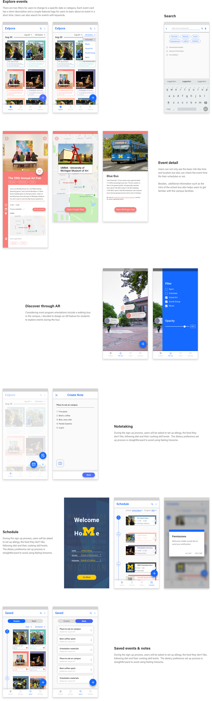
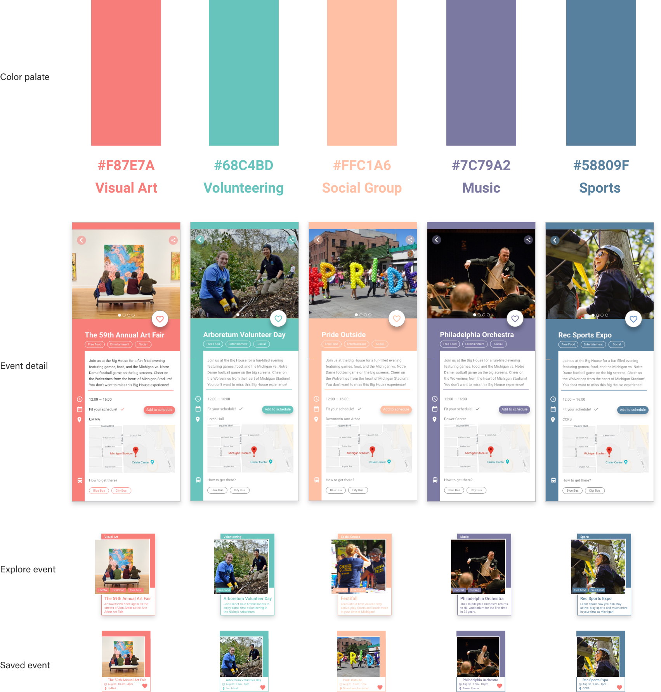

Welcome HoMe
Mobile experience for UMich students to discover orientation week events
Project Type
Solo design challenge
Role
It's a solo project that I researched, ideated and prototyped the entire user flow and interface
Duration
2 weeks
Skills
Survey, Wireframing, Prototyping, Sketching, Competitive Analysis
Design Challenge
How to help students to discover orientation events?
"Design an experience for students to discover orientation events and craft a visual system to accommodate different types of events: sports, music, visual arts, social groups, and volunteering events. Provide high-fidelity mocks for searching, browsing, and viewing the details for these different events. "
Design Overview

1. Explore orientation week events
To avoid overwhelming users with input fields, I reduced the number of fields and left customization in later flow.
“It seems there are so many to fill in before I can find people to play with.”
2. Explore the campus with AR
Inclusive time window was added to improve flexible scheduling.
“I hope I can make the time for game less rigid and welcome drop in during a flexible time frame.”


3. Schedule
Searching and customizing games with #keywords was inspired from users’ feedback to enhance the matching experience.
“I hope I can create a girls-only game.”
4. Take notes
Inclusive time window was added to improve flexible scheduling.
“I hope I can make the time for game less rigid and welcome drop in during a flexible time frame.”

Design Process
Radpid design sprint
Survey
Collect quantative data in a short time
In order to better understand the topic and collect quantative data for the design, I designed and distributed a survey with 12 questions related to UMich welcome week events. I collected 48 valid survey responses in total.
Competitve Analysis
Define problems of existing solutions
To understand what have been done and why it is effective or futile, I conducted competitive analysis and analyzed existing event information platforms with the event information platform that users mentioned in the survey.
Hallway Interview
Identify the painpoints and needs
After sending out the online survey, I conducted 4 face-to-face hallway interviews with people from different majors and years to further understand the experience
“Location and transportation is important. I went to events based on personal interest.”
“I wanted to know where everything is... I wish to learn more about school buildings”
“I went to events for free food!.”
Research Insights
Struggling moments of exlporing orientation events
Unfamiliar environment

Scheduling conflict
No enough information from current methods
Sketch
Designing the intial interaction

Wireframing
Low-Fidelity Prototyping
Based on the main features and task flow of our platform, I created initial sketches & wireframes of our prototype with the following user flows: User Onboarding, Gang Chat, Voice & Chat UI & Play feature.
Final Design
Give an insight for better orientation experience
Visual Design
Next step
Adding gameful elements
I liked the concept of the scavenger hunt as an orientation tool. I would redesign the rough AR feature and turn it into a gaming experience to make this exploratory experience more interesting and fun.

{kind=link}